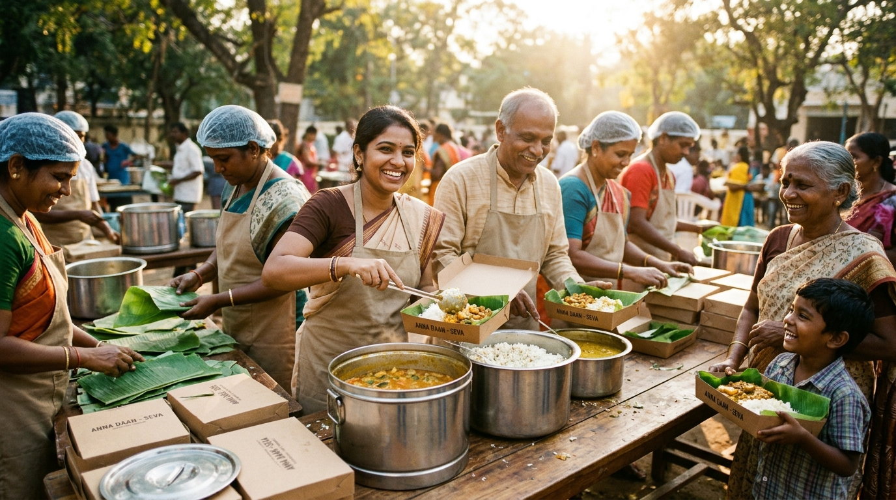
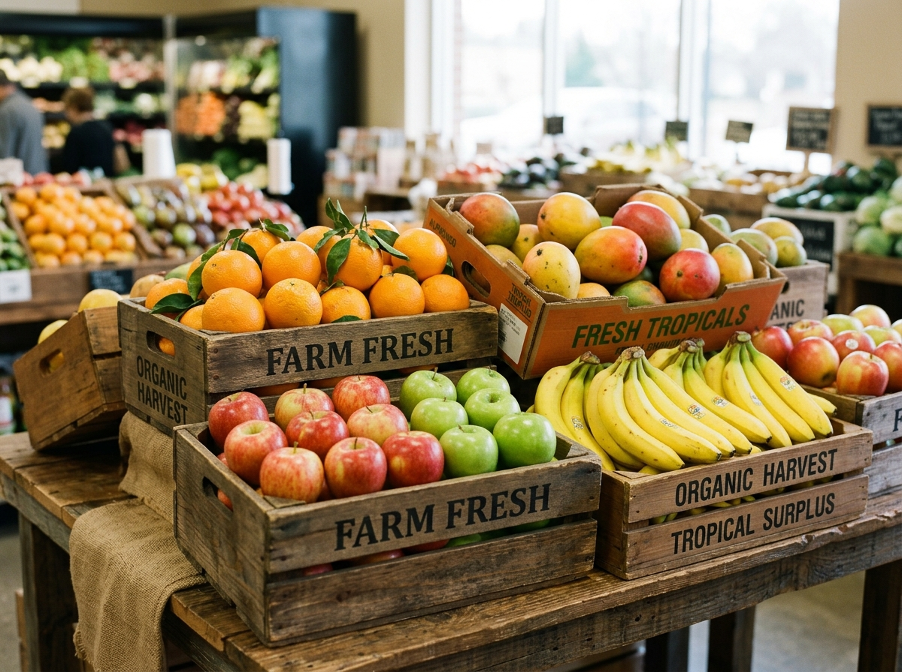
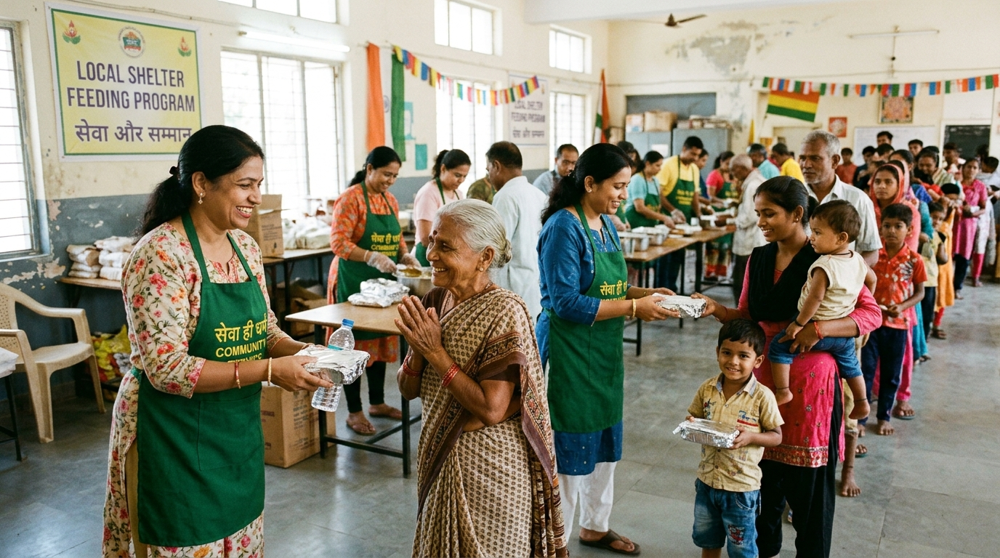

Don't Waste Food.
Share Hope.
Every meal deserves a home. Join ANNAM to connect surplus food from marriage halls, hotels, restaurants, and events with people who need it most.

Nourishing Communities Through Rapid Food Logistics
Over 68 million tonnes of food is wasted annually in India, while millions remain food insecure. ANNAM bridges this gap through a community-driven technology platform that matches fresh surplus food with local orphanages, elderly homes, and community shelters within hours of preparation.
Banquet & Catering Surplus
Marriage halls, caterers, and corporate dining halls can list 50 to 500+ untouched meals in under 60 seconds with safe consumption deadlines.
Volunteer Courier Fleet
Local volunteers receive instant dispatch notifications, complete physical food safety inspections, and transport hot meals directly to beneficiaries.
Certified Food Safety
We strictly enforce a 5-point physical verification protocol covering thermal integrity, packaging condition, odor, and consumption limits before handoff.
The Five-Step Food Rescue Cycle
From the dining hall to the recipient shelter in five seamless, verified stages.
ALERT
A donor (wedding hall, hotel, or caterer) creates an immediate surplus alert specifying meal count, prep time, and pickup address.
MATCH
Our smart routing algorithm immediately alerts nearby verified NGOs and assigns an active volunteer courier in the local radius.
SAFETY CHECK
The volunteer arrives on-site and inspects temperature, packaging integrity, and smell against our mandatory 5-point checklist before sealing.
DELIVER
The meal packets are transported promptly in insulated containers to the shelter with live GPS status updates visible to all parties.
TRANSPARENCY
The shelter confirms receipt with a digital signature, generating an immutable audit receipt and updating collective social impact metrics.
Real-Time Food Rescue Missions
See recent surplus listings ready for immediate volunteer pickup or shelter request.
 Available
Cooked Meals
Available
Cooked Meals
100 Vegetarian Meal Packets

In Transit Fresh Produce30 Fresh Fruit Boxes

Delivered Community Relieved75 Fresh Lunch Packets
Trusted by Donors, Volunteers, and Shelters
Real stories from community partners making zero food waste a daily reality.
"We host over 50 large wedding receptions every year. Seeing surplus fresh food reach hungry families in under an hour rather than being discarded brings true peace of mind to us and the wedding hosts."
"The 5-point food safety checklist is what makes ANNAM stand out. As a volunteer, I never have to guess whether food is fresh or well-sealed. Every pickup is dignified, structured, and rapid."
"Our shelter provides shelter and care to 140 orphan children and senior citizens. Receiving high-quality hot meals from verified donors allows us to redirect funds towards healthcare and education."